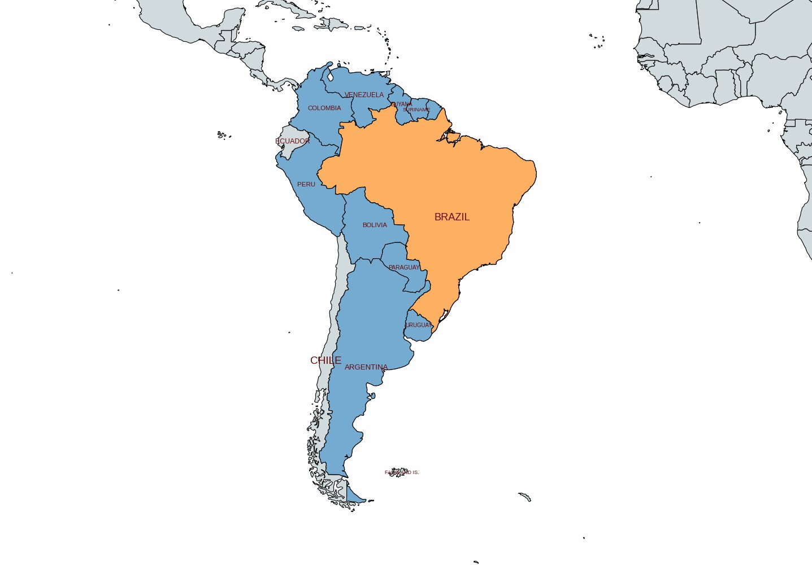
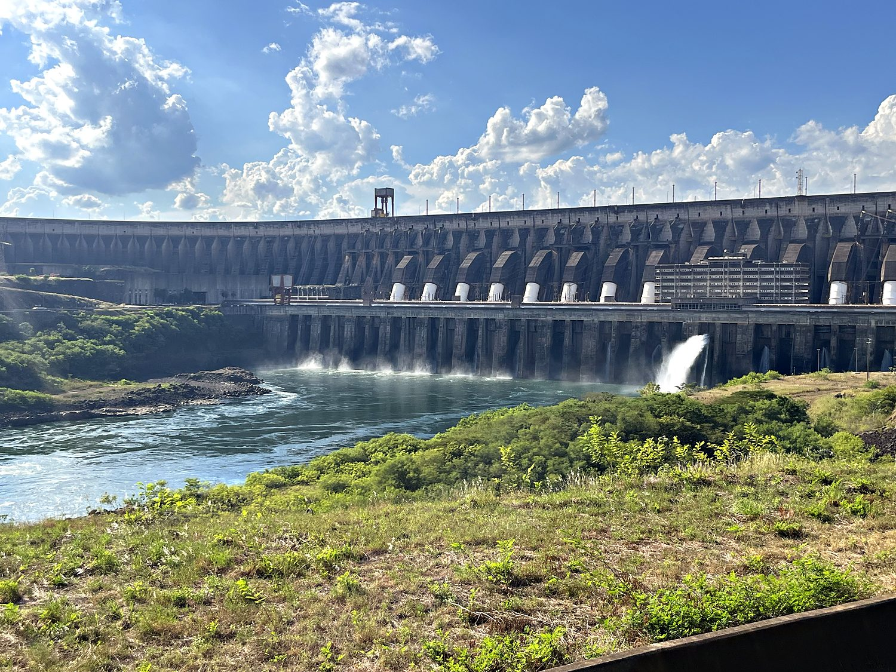
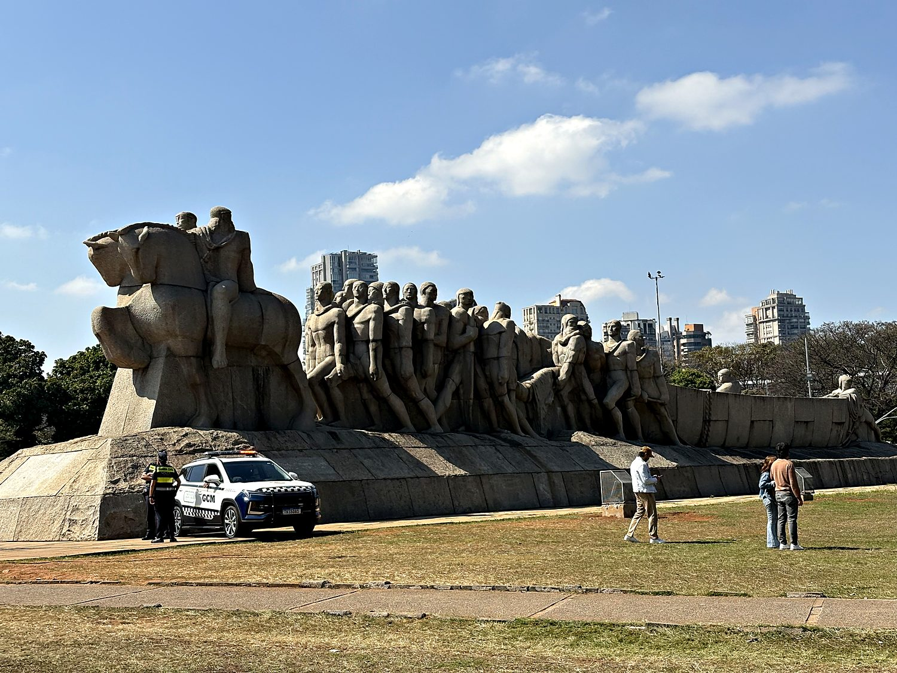
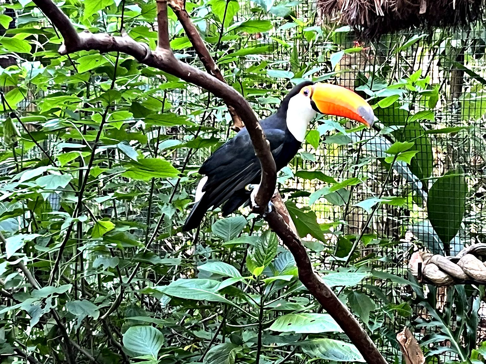

I first crossed into Brazil in March 2025 for a day trip to Iguazu Falls and the Itaipu Dam. In the process of navigating the country without speaking the language, I learned that if you speak slurred Spanish in a vaguely drunk, vaguely American accent, Brazilians will cheerfully accept it as Portuguese and treat you like an honored guest. Iguazu Falls were the most impressive waterfall I have ever seen, and make Niagara Falls look like a water faucet in comparison. They are a two-mile crescent of some 275 cataracts thundering into a gorge, throwing up so much mist that I was soaked from a hundred meters away, with rainbows strung through the spray. I returned to Brazil a few months later to visit São Paulo for my friend Gabriel’s wedding, which offered far less spectacular nature, but just as much human warmth and fun.
São Paulo is a city that does not so much sprawl as detonate outward in every direction. It is the largest city in the Americas and the Southern Hemisphere, home to more than 20 million people across its metro area, and it wears its size with a certain gleeful chaos. Founded in 1554 by Jesuit missionaries at a spot now called the Pátio do Colégio, it spent centuries as a modest town before coffee wealth and then heavy industry turned it into Brazil's economic engine. I spent a day walking it end to end: the frenetic Avenida Paulista, the elegant nineteenth-century Theatro Municipal, the neo-Gothic Sé Cathedral, and block after block of the extraordinary street art that has made São Paulo one of the world's great open-air galleries. A brief highlight was a troop of small monkeys in one of the parks, who regarded us with the mild disdain of locals watching yet another lost tourist consult his phone.

Brazil's history is inseparable from its sheer scale. Claimed for Portugal in 1500, the colony became the engine of the Atlantic sugar economy and, tragically, the single largest destination for enslaved Africans anywhere in the Americas. By some estimates nearly five million people were trafficked here, and Brazil was the last country in the Western Hemisphere to abolish slavery, in 1888. Its borders, meanwhile, were pushed relentlessly inland by the bandeirantes, the São Paulo fortune-hunters who trekked deep into the continent in search of gold and captives, and in doing so dragged Brazil's frontier far past the line Portugal and Spain had originally drawn between their empires. Brazil’s legacy is equal parts national origin story and open historical wound.
Independence came by one of history's stranger routes. In 1822, rather than fight a war, the Portuguese crown prince Dom Pedro, who happened to be living in Brazil, simply declared the colony independent and crowned himself its emperor, making Brazil a monarchy that outlasted the empire which had spawned it and survived until a republican coup in 1889. Today Brazil is the giant of Latin America by almost every measure: its largest country, its most populous nation at some 212 million people, its biggest economy, and the only one in the region where the language echoing through the streets is Portuguese rather than Spanish (a distinction I spent the entire trip cheerfully blurring). It is a founding member of the BRICS bloc and the guardian of most of the Amazon.
The most staggering thing I saw near Iguazu was not made of water but of concrete. The Itaipu Dam, straddling the Paraná River on the border with Paraguay, was for decades the largest hydroelectric plant on Earth. It was dethroned only by China's Three Gorges Dam, and it remains the second most productive in the world. The scale is genuinely hard to process: a wall of concrete holding back a reservoir the size of a small sea, generating a colossal share of the electricity for both nations (it supplies the overwhelming majority of tiny Paraguay's power and around 10% of Brazil's). Catching the last tour of the day, I stood before it in awe of its gargantuan size.

Back in São Paulo, the Monumento às Bandeiras looms near the entrance to Ibirapuera Park: a vast granite scrum of men and horses straining forward, sculpted by Victor Brecheret and unveiled in 1953. It commemorates the bandeirantes who settled Brazil, and it is impossible to look at without ambivalence. To some Brazilians they are heroic pioneers who forged the country's continental frontier; to others they are the men who enslaved and slaughtered the indigenous peoples in their path. The monument, all rippling muscle and forward momentum, was built as a celebration, but standing beneath it today, it reads more like a memorial to the whole complicated, unresolved question of how Brazil came to be so enormous.

I ended my time in the Iguazu region at the Parque das Aves, a sanctuary tucked into a surviving fragment of the Atlantic Forest. This coastal rainforest once blanketed eastern Brazil and has since been whittled down to a fraction of its former self. Among king vultures with faces only a mother could love, caimans lounging companionably beside turtles, and macaws in every color of the spectrum, my favorite was this toco toucan, whose absurd, banana-bright beak looks less like an evolutionary adaptation than a design flaw nobody had the heart to correct. It made a fitting note to end on: proof that for all its dams, monuments, and megacities, Brazil's most jaw-dropping creations remain the ones it never had to build.
